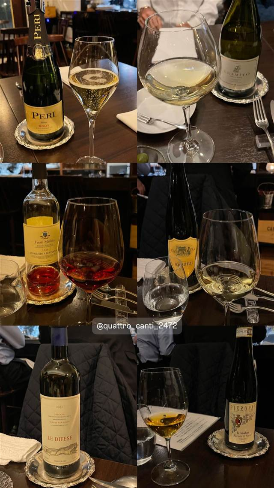

Quattro Canti（クアトロカンティ）
シチリアの四つ角にちなむ名の予約制ラザニアとワイン
quattro canti
南青山の路地裏にある予約制イタリアン。店名はシチリア・パレルモの名所『クアトロ・カンティ（四つ角）』にちなみ、シェフ神谷健太郎氏のラザニアなどをワインとともに楽しめる。
TRIVIA
豆知識
- 店名はイタリア・シチリア島パレルモの旧市街にある有名な交差点『クアトロ・カンティ（四つ角）』に由来する
REVIEWS
世間の評判
3.05食べログ
手打ちパスタとジビエ料理
- 手打ちパスタのラザニアを評価する声がある
- ハンター直送のジビエ料理を楽しむ人がいる
- シェフとソムリエの人柄の良さを評価する声がある
食べログ 口コミ7件
| 創業 | 2023年4月1日オープン |
|---|---|
| 看板 | ラザニアなどイタリア料理とワインペアリング |
| こだわり | 予約制のアラカルト営業で、ワインに寄り添う料理を提供 |
| どこから | 都心 |
| 行くなら | 予約必須 |
| 予算 | 夜 ¥15,000～¥19,999 |
| 予約 | 予約可 |
| 場所 | 表参道・乃木坂 東京都港区南青山6-13-18 |
| メモ | 予約制。南青山の路地裏に位置する小規模店 |
食べたもの：ワイン / コース料理
NEARBY
近い店・同じ系統の店
-
 韓国 広尾
胡同 西麻布店（フートン）
西麻布の裏路地で30年、名物はねぎタン塩とカムジャタン鍋
夜 ¥4,000～¥4,999
韓国 広尾
胡同 西麻布店（フートン）
西麻布の裏路地で30年、名物はねぎタン塩とカムジャタン鍋
夜 ¥4,000～¥4,999
-
 そば 乃木坂駅
おそばの甲賀
赤坂砂場で14年修行した店主が営む、ミシュラン掲載の石臼挽きそば
昼 ¥2,000～¥2,999 夜 ¥6,000～¥7,999
そば 乃木坂駅
おそばの甲賀
赤坂砂場で14年修行した店主が営む、ミシュラン掲載の石臼挽きそば
昼 ¥2,000～¥2,999 夜 ¥6,000～¥7,999
-
 そば 広尾
蕎麦たじま
江戸前蕎麦にフレンチ風プリフィクス野菜料理を組み合わせた独自の店
昼 ¥1,000～¥1,999 夜 ¥4,000～¥4,999
そば 広尾
蕎麦たじま
江戸前蕎麦にフレンチ風プリフィクス野菜料理を組み合わせた独自の店
昼 ¥1,000～¥1,999 夜 ¥4,000～¥4,999
-
 そば 六本木
蕎麦前 山都（六本木ヒルズけやき坂通り店）
毎朝築地で仕入れる鮮魚と十割蕎麦を楽しむ蕎麦前スタイル
昼 ¥1,000～¥1,999 夜 ¥5,000～¥5,999
そば 六本木
蕎麦前 山都（六本木ヒルズけやき坂通り店）
毎朝築地で仕入れる鮮魚と十割蕎麦を楽しむ蕎麦前スタイル
昼 ¥1,000～¥1,999 夜 ¥5,000～¥5,999
-
 そば 広尾駅
こんぶや 西麻布
知床の希少な羅臼昆布を店主自ら買い付ける、30種以上のおでん
夜 ¥5,000～
そば 広尾駅
こんぶや 西麻布
知床の希少な羅臼昆布を店主自ら買い付ける、30種以上のおでん
夜 ¥5,000～
-
 ベーカリー 六本木
bricolage bread & co.（六本木ヒルズけやき坂テラス店）
大阪のパン屋と西麻布フレンチ、ノルウェーの3者が生んだ全粒粉パン
昼 ¥1,000～¥1,999 夜 ¥1,000～¥1,999
ベーカリー 六本木
bricolage bread & co.（六本木ヒルズけやき坂テラス店）
大阪のパン屋と西麻布フレンチ、ノルウェーの3者が生んだ全粒粉パン
昼 ¥1,000～¥1,999 夜 ¥1,000～¥1,999